Analysis and Indexing
As LemmaLoom receives a document into your project, it automatically processes the document by indexing it, provided that your document is in English, German, or Chinese, unless you choose otherwise as you import it. The indexing process parses your text into sentences and words, determines the dictionary form and word class of each word, and computes the syntax structure between all the words of each sentence. Lenses, the Grammar tab in the inspector, word sketches, keyword lists, and most word-based queries rely on indexing results. While LemmaLoom is processing your documents, you are free to read and code them in the reader without waiting.
Indexing time depends on how long your documents are and on your Mac’s hardware. “Climate Debate”, the example project, comes pre-indexed.
For the rest of this chapter, indexing is used for describing the process performed by LemmaLoom, following the naming convention used by its status messages (Indexing, Indexed, Waiting to be indexed). As well, indexing results are referred to as grammar analysis (or simply the analysis).
Key terms
This analysis breaks a text apart at various levels. Terms such as token and lemma will crop up frequently in this user guide, and Help ▸ Glossary has definitions of the main ones.
- Tokens refer to individual words or punctuation marks. Each period separating sentences is its own token.
- Lemmas represent dictionary forms of words. Thus warning is the lemma of warnings, be is the lemma of was, and gehen the lemma of ging.
- The word class, or part of speech, refers to whether a token is a noun, verb, adjective, etcetera. All three languages share the same universal word classes, such as NOUN, VERB, and ADJ.
- Tags refer to more detailed parts of speech restricted to a specific language. English warnings is the plural noun NNS. German Klima is the noun NN.
- Morphology tracks the grammatical properties of word forms. It includes information about tense, number, and case.
- A dependency pairs a token with another token, known as its head. Dependencies also describe the relationship. In the most urgent steps, both tokens the and urgent have dependencies linking them to steps. Each sentence has one token that depends on no other word. This word is called a root, usually the main verb.
- Phrase structure (or constituency) organizes tokens into hierarchies, such as noun phrases contained in verb phrases within clause structures.
- A noun chunk represents a noun, along with preceding tokens that modify the noun. Examples include noun chunks such as the most urgent steps, or pronouns such as we when they act as subjects or objects of verbs.
- Stopwords represent highly frequent words containing minimal significance themselves, for instance, the, and, or was.
- Finally, an analyzer executes once grammar analysis has been completed, annotating passages of one kind, such as ties between sentences or rhetorical devices. The passages annotated by an analyzer become its findings.
What happens during indexing
Document indexing entails the following sequence of actions:
- LemmaLoom settles the document’s language, which decides the models it uses.
- Text that matches the document’s Exclude from indexing patterns is blanked out, so indexing skips it.
- The text is divided into tokens and sentences. Chinese, which is written without spaces between words, is first divided into words.
- Each token gets its word class, tag, and lemma, and in English and German its morphology.
- LemmaLoom works out the dependencies between the words of each sentence.
- It works out the phrase structure of each sentence.
- It finds the noun chunks and the stopwords.
- The built-in analyzers Cohesion, Metadiscourse, and Rhetoric run, and so do any analyzers you have written yourself.
- Everything is saved with the document.
- Once the whole document has been indexed, LemmaLoom computes its statistics. A long document is indexed in parts (see After an edit later in this chapter).
During indexing, progress stages and percentages are displayed in the reader’s status bar, in the Activity window, and via tooltips of the badges in the navigation sidebar. Initially, you see Analyzing until around 5% of the document has been processed, followed by Parsing structure until about 97%, and finally Saving. Percentages indicate how much of the text content has been indexed in the document; parsing of the phrase structure takes most of the time during indexing.
An example sentence
The op-ed entitled “Running Out of Time” in the example project poses a question about what needs to occur now. It answers its own question with the sentence The most urgent steps are not mysterious. Its analysis appears below:
| Token | Lemma | Word class | Tag | Dependency | Head |
|---|---|---|---|---|---|
| The | the | DET | DT | det | steps |
| most | most | ADV | RBS | advmod | urgent |
| urgent | urgent | ADJ | JJ | amod | steps |
| steps | step | NOUN | NNS | nsubj | are |
| are | be | AUX | VBP | ROOT | none |
| not | not | PART | RB | neg | are |
| mysterious | mysterious | ADJ | JJ | acomp | are |
| . | . | PUNCT | . | punct | are |
LemmaLoom employs two distinct encoding systems for the tagging of words in texts. In the word classes scheme, for instance, DET refers to a determiner, ADV to an adverb, ADJ to an adjective, AUX to an auxiliary verb, PART to a particle, and PUNCT to a punctuation mark. In the tags scheme, however, DT corresponds to a determiner, RBS to a superlative adverb, JJ to an adjective, VBP to a present-tense verb, and RB to an adverb. These two schemes categorize words differently; thus, while not falls under particles in the former, it belongs to adverbs in the latter. On the other hand, dependencies encode grammatical relationships between words rather than properties; for example, det signifies a determiner, advmod a modifying adverb, amod an adjective describing a noun, acomp an adjective complementing a verb, and punct a punctuation mark. The Grammar tab provides expanded forms for all these abbreviations, such as Noun, plural for NNS, and Help ▸ Glossary lists all grammatical codes (including morphological features).
Consider the following points regarding these annotations:
- Not is a token of its own, and the Negation lens annotates it. Contractions become two tokens; hence, cannot, which appears later in the same paragraph, becomes can and not, and don’t becomes do and n’t. Furthermore, the Negation lens annotates n’t just as it annotates not.
- The lemma for steps is step; therefore, queries or word sketches based on the lemma step retrieve both step and steps. Likewise, the lemma for are is be.
- Word class merely tells you that steps is a noun. On the other hand, the tag NNS informs you that steps is plural. In addition, the morphological annotation reveals the same piece of information in the form of Grammatical number Plural, which you may view in the Grammar tab.
- Dependencies reveal which words take on what roles in the sentence. Steps is the subject (nsubj) of are, mysterious specifies the characteristics of the subject (acomp), and not negates the action expressed by are (neg). Are is the root of the sentence; therefore, it has no head. Are is the only verb here, although its word class is AUX.
The phrase structure categorizes the same words differently. The most urgent steps constitutes a noun phrase (NP); it includes an adjective phrase (ADJP), most urgent. Are not mysterious is a verb phrase (VP), containing an ADJP, mysterious. Finally, NP and VP are the two main parts of the clause (S).
Only one noun chunk exists here, the most urgent steps. A noun chunk ends with its noun or pronoun; hence, it can be shorter than the NP enclosing it. In the thermometer outside my kitchen window from the beginning of the op-ed article, the noun chunks are the thermometer and my kitchen window, whereas the phrase structure considers the whole string one NP.
Four of eight tokens here are stopwords (The, most, are, and not).
If you wish to know how indexing annotated a word, click the word in the reader. Then navigate to the Grammar tab in the inspector; the Grammar facet displays a word’s lemma (if it differs from the word itself), Part of speech, and Tag. Moreover, it displays the word’s dependency relationship under FUNCTION, its head, and its morphological annotations under MORPHOLOGY. In case you imported “Climate Debate” using File ▸ Import ▸ Example Project (refer to The example project in Chapter 1, Introduction), you can examine whether the above information matches the annotation of steps in “Running Out of Time”. For more on this view and on the diagrams of dependencies and phrase structure, see Chapter 11, The Grammar Inspector.
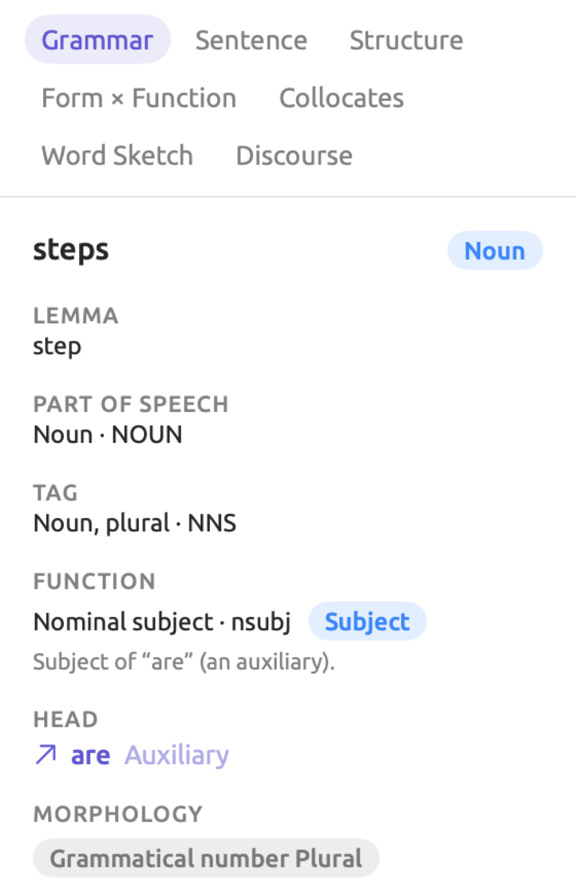
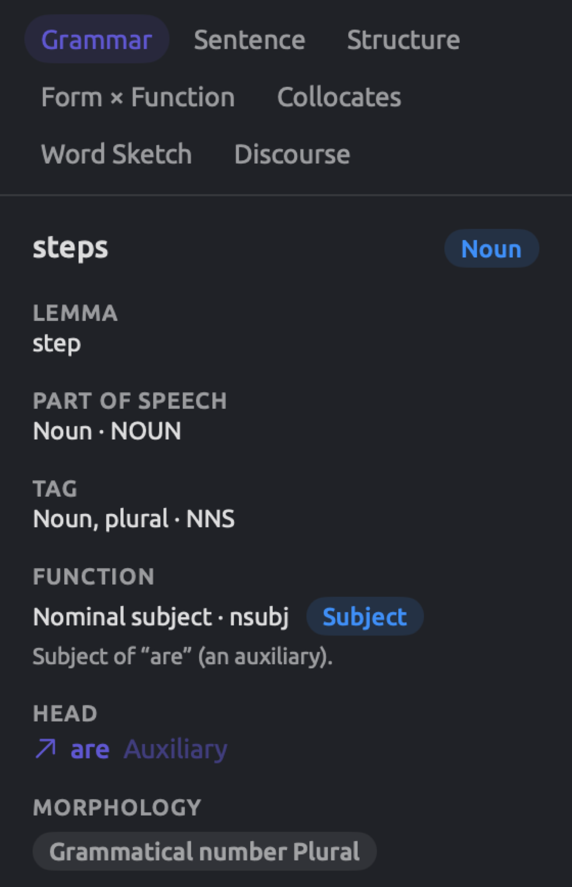
The sources of the analysis
The analysis stems from statistical models, i.e., machine learning models built on vast amounts of text data for choosing the most probable analyses of every word or sentence within a document. Separate models exist for each of the three languages, and all come with LemmaLoom. Under LemmaLoom ▸ About LemmaLoom is a list of LemmaLoom’s licenses; the Licenses section shows you the authors and license details of the included models (see Licenses in Chapter 26, Help and Support).
These models will get things wrong sometimes. They were trained mostly on written texts. Thus, analyses become less reliable in transcription-based documents, dialects, or text damaged by PDF extraction. Chinese analysis makes more errors compared to English and German analysis because the models need to locate Chinese words prior to analyzing them.
The built-in analyzers
Three analyzers come with LemmaLoom and process documents in all three languages:
| Analyzer | What it annotates |
|---|---|
| Cohesion | How each sentence ties back to what came before, through a pronoun, a possessive, a demonstrative such as this, a repeated word, or, in Chinese, an omitted subject. A sentence with none of these opens a new topic. |
| Metadiscourse | Words a speaker or writer uses to guide the listener or reader, namely hedges (perhaps), boosters (clearly), attitude markers (unfortunately), connectives (however), and engagement markers (you, consider). German adds modal particles such as ja and doch, and Chinese adds sentence-final particles such as 吗 and 吧. |
| Rhetoric | Rhetorical devices such as passive voice, nominalization (an action turned into a noun, decision for decide), parallelism, fronted openers (a phrase before the subject), periodic sentences (the main verb held back to the end), questions and commands, and sentences that open with the same words. |
The built-in analyzers provide an easy entry point for posing questions related to how a particular piece of writing is constructed. For instance, they can show how often a writer uses hedge constructions, or where the speaker begins discussing something else entirely. The results generated by these analyzers will then show up in lenses of matching names (see Chapter 6, Lenses) as well as the Discourse facet of the Grammar tab (see Chapter 11, The Grammar Inspector). Queries which return Findings (see Chapter 15, Building a Query) can also reference these analyzers. Custom analyzers that you develop from Window ▸ Analyzers run alongside the built-in ones, on documents in the specified languages (see Chapter 20, Custom Analyzers).
Statistics and counts
Once LemmaLoom finishes indexing a document, it counts its sentences and tokens. The Text tab within the document’s inspector lists the document’s sentence count and performs analyses of word counts, readability, and vocabulary statistics (see Chapter 10, The Text Inspector). Until the first piece of the document is indexed, the Text tab shows Statistics become available when indexing completes.
There are essentially two counts in LemmaLoom:
- In a token count, all punctuation marks and symbols are included. When creating a condition in a smart set or a rule in a query, selecting the Tokens field gives results based on token count. Similarly, the reader’s status bar displays a token count labeled as words.
- Word count disregards punctuation and symbols while counting all numbers and numerals in addition to regular words. The Text tab uses word count, as well as the Per 10,000 Words measure used in queries (see Measures in Chapter 16, Query Results and Statistics).
The sample sentence from “Running Out of Time” has 8 tokens (7 words plus the period). Contractions, like don’t, comprise two words (do and n’t), whereas numerals like 2050 form single words. In Chinese texts, LemmaLoom counts individual words according to its indexing process.
Prior to indexing, both the Tokens and Sentences counts of a document return 0 in any queries and smart sets. Furthermore, for documents stored in other languages (such as French), the counts always remain 0. Hence, a smart set of documents with fewer than 1,000 Tokens also includes all non-indexed documents. Once edits occur on existing documents, the two counts retain their last known figures until indexing completes. The Characters field comes directly from the document’s content and gets calculated immediately. For sorting or comparisons of lengths between documents pending indexing, you should select Characters instead.
Text excluded from analysis
Patterns under Exclude from indexing in either the import dialog or Document Properties will prevent matching texts from being analyzed (see Excluding text from indexing in Chapter 4, Importing Material). These texts include timestamps, speaker labels, headers, footers, etc. LemmaLoom blanks out each matched passage before indexing the text, so these items stay out of word counts, keyword lists, word sketches, and the built-in lenses.
You will be able to view excluded text in the reader and apply codes, while the search bar searches it. A query for Text Matches will also search it if the first menu of its text row is set to the default setting of Text. This occurs since the query reads the text itself. In the event you change this menu to Word, Word Form, or Lemma, the query compares tokens instead, so it skips excluded text.
What each language supports
All three languages receive tokenization, sentence splitting, word class detection, tagging, lemmatization, dependency parsing, phrase structure, noun chunking, stopword identification, and all three built-in analyzers. Differences arise in the specifics:
| English | German | Chinese | |
|---|---|---|---|
| Dividing the text into words | At spaces and punctuation; don’t becomes do and n’t | At spaces and punctuation | By a model that finds the words, since they are not separated by spaces |
| Tags | Penn Treebank | STTS (Stuttgart-Tübingen tagset) | Penn Chinese Treebank |
| Dependency labels | English labels such as nsubj and dobj | TIGER labels such as sb (subject) and oa (accusative object, the direct object) | The English labels, plus Chinese ones such as aux:asp for aspect markers like 了 |
| Phrase labels | Penn Treebank, such as NP and PP | TIGER, such as NP and PP | Penn Chinese Treebank |
| Morphology lens | Tense, Number, Degree (comparative, superlative), Verb form | The same, plus Case, Mood, and Gender | Not offered |
| Metadiscourse categories | Five | The five, plus Modal particle | The five, plus Final particle |
| Rhetoric devices | All thirteen | All but Absolute phrase | All but Periodic sentence and Absolute phrase |
| Lenses for this language only | None | Sentence fields (see Sentence fields (German) in Chapter 6, Lenses) | Constructions and Particles (see Constructions and Particles (Chinese) in Chapter 6, Lenses) |
Penn Treebank, Penn Chinese Treebank, STTS, and TIGER are standard annotation schemes, which the models were trained on.
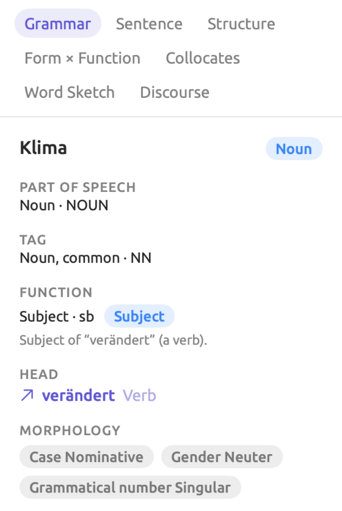
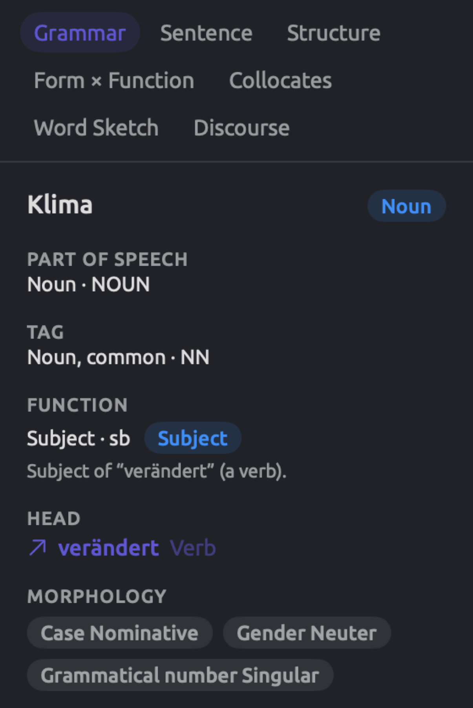
Chinese words have a single form, and hence, the lemma of a Chinese word is always the word itself.
The stopwords discovered through the process of indexing go into the Stopword share in the Text tab and the Stopword field of words when querying; the Collocates facet of the Grammar tab ignores stopwords. The stopwords lists are internal lists provided by LemmaLoom; LemmaLoom comes pre-packaged with 162 stopwords in English, 211 stopwords in German, and 153 stopwords in Chinese. If a token’s form or lemma matches an item on one of the lists, regardless of capitalization, it becomes a stopword. Since the stopword lists are fixed, you may define your own rules when querying to leave out other words.
Help ▸ Glossary gives detailed descriptions of every tag, dependency label, and phrase label in use by LemmaLoom. Pick a term category from Help ▸ Glossary’s sidebar (such as Part-of-speech tags, Dependency relations, Phrase labels, or Morphology), then search using the Search field above the glossary list. An item labeled EN, DE, or ZH is defined specifically for English, German, and Chinese respectively; otherwise, all three languages use that definition. Any part-of-speech tag, dependency label, or phrase label highlighted with colors in lenses appears in Help ▸ Glossary in matching colors too. Hover the mouse pointer over one of them to know which lens uses that tag, dependency label, or phrase label.
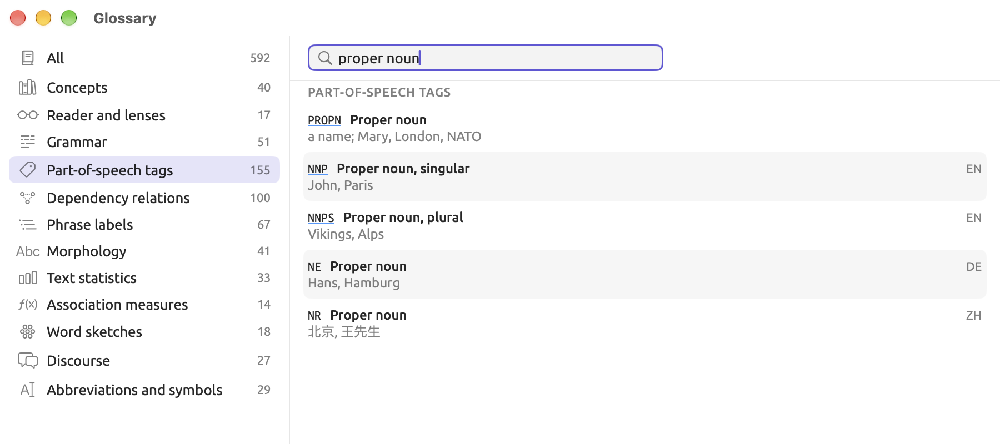
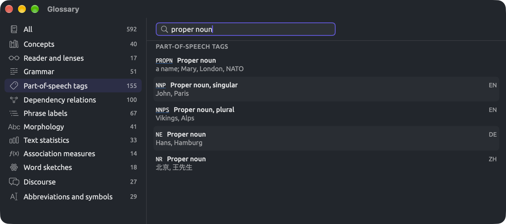
How LemmaLoom decides the language
Language, set in the import dialog or in Document Properties, determines what models will be used to index the document. In the navigation sidebar, after the document’s name, Language appears as a short code such as EN, DE, or ZH; hover the mouse pointer over the code on the navigation sidebar to view its full name.
Set Language to Automatic, and LemmaLoom will recognize the language from the first 4,096 characters of the text in the document. With a recording, LemmaLoom will recognize its language based off the transcription language when available; otherwise, it reads the text in the document. LemmaLoom does this both on import and each time you set Language back to Automatic and save. Documents inside a project imported in REFI-QDA format will have their languages recognized the same way.
Sometimes, LemmaLoom may mistake one of the three supported languages for another. Therefore, it may use the wrong models to analyze documents after importing them into LemmaLoom. After a large import, check the language codes in the sidebar. Choose the language yourself when the beginning of a document is not representative of the whole document, or when LemmaLoom has misidentified the language. An example scenario may arise where LemmaLoom tells you No grammar analysis for Spanish for an English-language blog post; set Language to English within Document Properties and press Save.
Each document will always be indexed using one language across the entirety of the document. Text segments written in another language, e.g., quotations in foreign languages, will still be analyzed according to the models of the main language and yield unreliable results.
Translations will have their languages determined by their target languages. Hence, “Running Out of Time (German)” will be analyzed based on the German models. They are indexed with all analyzers for the language, and Exclude from indexing starts blank, whatever the original uses; you may adjust any setting in Document Properties.
Other languages
LemmaLoom supports importing a document written in any other language (French, Spanish, etc.) as text alone. The badge on the navigation sidebar for the document is a question mark, and hovering the mouse pointer over it produces Language not supported for indexing. In the reader, the status bar at the bottom will tell you No grammar analysis for French, where French stands for whatever the unsupported language is. You may continue reading, searching, editing, and coding documents despite lack of language support, and use them in every view that works without the analysis (see What is available without the analysis later in this chapter).
Following indexing
Indexing occurs on all of your projects regardless of which one you currently have opened. LemmaLoom indexes up to three documents simultaneously or up to three sections of one document at once; everything else is indexed in order. Should you quit LemmaLoom prematurely while indexing, then the remaining indexing process is resumed whenever you start LemmaLoom back up again.
The models associated with a language get loaded into RAM upon needing to analyze the first document within that language, and around a minute and a half after the last document is done, they’re unloaded from memory.
In the sidebar
A small badge after a document’s name and language code in the navigation sidebar shows its index status. Hover your mouse pointer on top of the badge to reveal the status label. These statuses are also available in smart sets and queries via the Index Status field.
| Badge | Index Status | Meaning |
|---|---|---|
| No badge | Indexed | The document has been indexed. |
| Progress ring; the name is gray | Indexing | The document is being indexed. The tooltip shows the stage and the percentage, such as Parsing structure 35%. |
| Progress ring or spinner | Running Analyzer | An analyzer you started with Run in Document Properties is running on the document. The tooltip reads, for example, Running Cohesion. |
| Dotted circle | Not Indexed | The document waits in the queue (Waiting to be indexed). |
| Pause sign | Skipped | Indexing is off for this document, because it was imported without indexing (see Importing without indexing below). |
| Question mark | Unsupported | The document is in another language (Language not supported for indexing). |
| Red warning triangle | Failed | Indexing failed. The tooltip gives the reason (see When indexing fails below). |
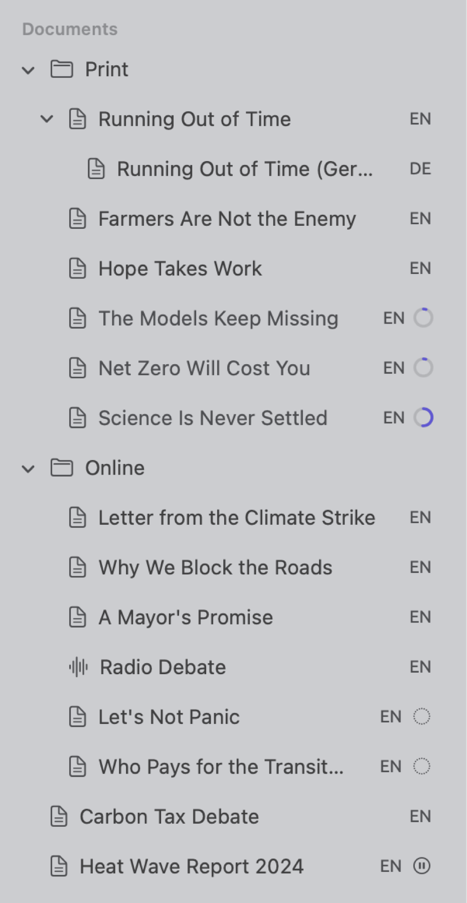
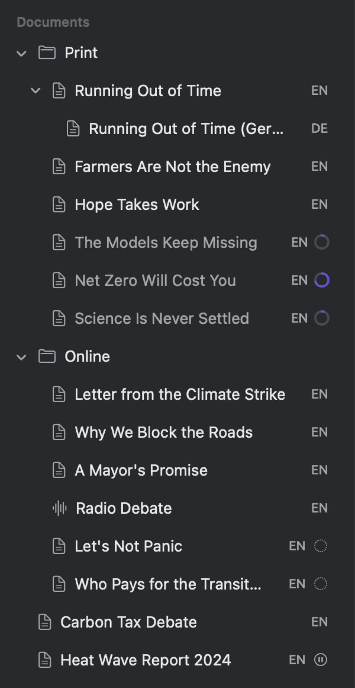
In the reader
Document counts, including paragraph, sentence, and token counts of a document, are displayed at the far right side of the status bar of the reader. The counts displayed depend on the items displayed in the gutter (see The status bar in Chapter 5, Reading and Editing). For instance, the status bar shows 10 ¶ · 65 S · 1,029 words for “Running Out of Time”. Until indexing finishes, and while you run an analyzer with Run, the status bar instead displays one of these:
- Stage and percentage completed, e.g., Parsing structure 35% accompanied by a progress ring;
- Indexing with a spinner icon while waiting for its turn (Waiting to be indexed in the sidebar);
- Running with an analyzer name followed by percentage completed when the document size is large, e.g., Running Rhetoric;
- Indexing is off with an Index Now link for a document added without indexing;
- No grammar analysis for followed by the language;
- Failure reason followed by a Retry Indexing link for the document failing indexing.
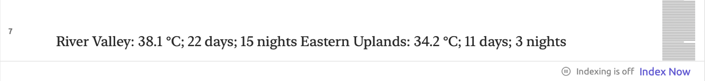
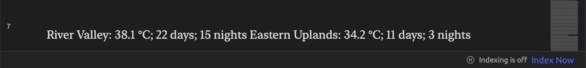
Other components in the reader also await indexing (refer to Before indexing has finished in Chapter 5, Reading and Editing).
In the Activity window
Window ▸ Activity (⌥⌘0) displays the activity performed behind the scenes in all projects (refer to The Activity window in Chapter 4, Importing Material). The following sections of the Activity window describe the indexing activities:
- Indexing displays the list of documents undergoing indexing activity, along with their stage and progress in percentages, and the documents currently being analyzed with a specific analyzer, e.g., Running Metadiscourse 40%.
- Failed shows the list of the documents that had their indexing fail, along with the reason for the failure, and a link named Retry Indexing for attempting the operation again.
- Lastly, Waiting provides the list of documents waiting for their turn in the queue, marked with the status of Waiting to be indexed.
All rows indicate the name of their associated projects, so the Activity window is the place to follow indexing in projects other than the active one.
Finding documents by their index status
The members of a smart set will update automatically as documents finish indexing. A smart set can therefore show which documents are not ready yet following an import containing many documents. Create a smart set as follows:
- Choose Project ▸ New Smart Set, or click New Smart Set at the end of the Sets section in the sidebar.
- In the dialog that opens, give the set a name.
- In the condition row, choose Index Status in the menu showing Attribute or Tags.
- Choose is none of in the menu showing is any of.
- Open the value menu, which reads None, and select Indexed.
- Click Save.
As you make changes to your criteria, the number beneath the conditions will inform you how many documents are in your set. Your set can also contain documents that are in other languages, as well as, briefly, documents with an analyzer running via Run on them. Should you wish to see only the documents requiring your attention, select is any of with Failed, Skipped, and Unsupported instead.
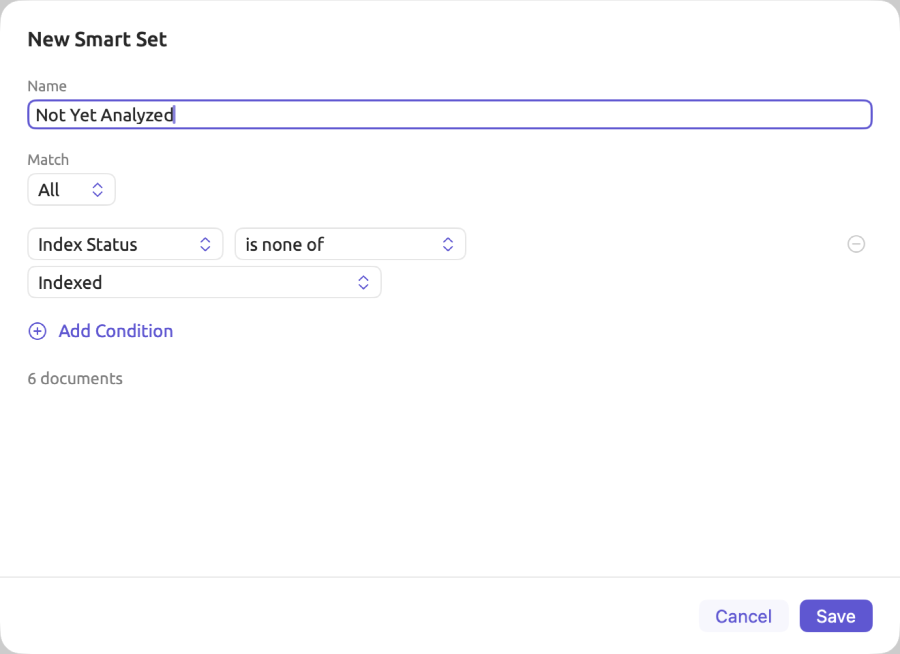
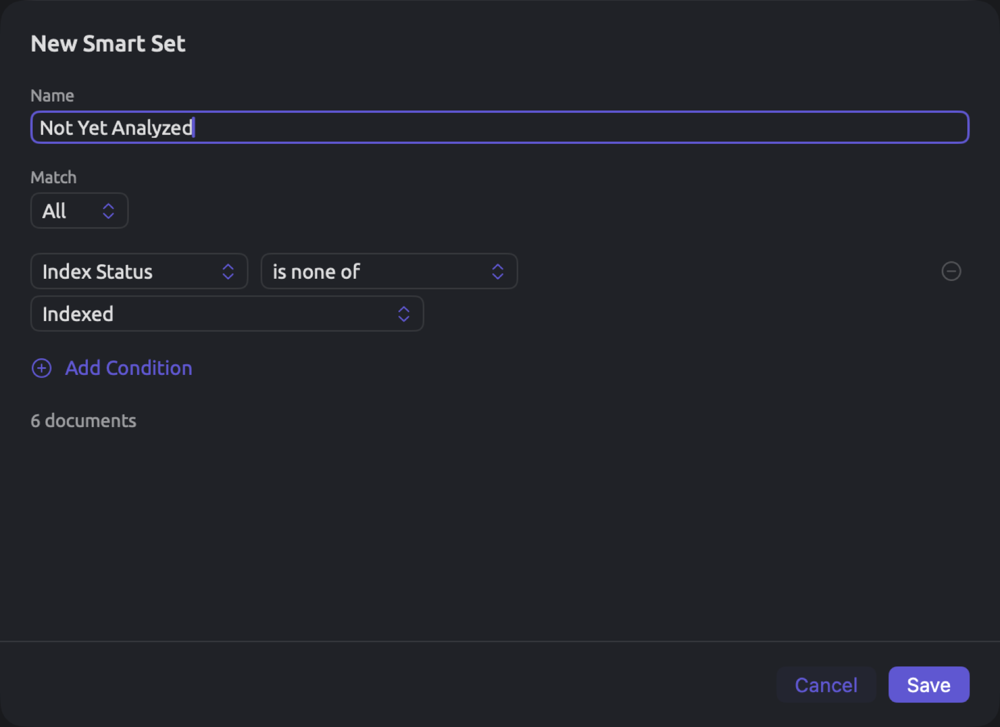
The Index Status field is part of the Documents unit in queries. Both smart sets and queries also feature the Indexing Skipped field, indicating whether or not a document was imported without indexing and is still waiting for Index Now. To read more about smart sets, refer to Chapter 8, Sets, Groups, Tags, and Attributes.
When indexing fails
Should the indexing fail on any document, a warning icon in the form of a red triangle will replace the badge next to the document in the sidebar. The document will also move to the Failed section inside the Activity window. The failure’s cause will appear when hovering the mouse pointer over this icon, within the document’s shortcut menu inside the sidebar, or in the reader’s status bar. When there isn’t anything specific enough to say, the reason for the failure reads Indexing this document failed.
There is also always an option to retry the indexing process, Retry Indexing, available in these places:
- from the document’s shortcut menu within the sidebar;
- from the reader’s status bar; or,
- from the document’s row in the Failed section inside the Activity window.
LemmaLoom then indexes portions of the document which lack analysis and reruns its analyzers. LemmaLoom attempts retrying automatically upon startup, and, once it has waited long enough, again the next time it indexes any document. These waiting times double with each failure, starting at one minute until hitting one hour.
After multiple failures occur on the same document, check its Language property under Document Properties. Within the reader itself, locate portions of text which aren’t actual text (e.g., random characters caused by a corrupted PDF file), and fix or exclude such portions. Should nothing else work, feel free to report issues via Help ▸ Send Feedback (see Chapter 26, Help and Support).
Importing without indexing
You may choose to bring in a document and leave it unindexed and have it indexed later. Some instances that warrant importing documents unindexed could be a large number of documents where you need to keep your Mac free now; a PDF where the extracted text must first be corrected before being indexed; and documents which will only ever be needed for reading and coding purposes.
How to import documents without indexing them:
- Import the document as usual (see Chapter 4, Importing Material).
- In the Indexing part of the Import Document or Import from Web dialog, deselect Index for grammar analysis. The Analyzers list below it is disabled.
- Click Import.
A dialog appears once for each file imported, with the checkbox checked at first on each dialog. You can uncheck it on each dialog to import multiple files without indexing.
Such a document won’t be added to the queue even if its contents change later. Its lens menu remains disabled while the status on the Grammar tab states Grammar becomes available when indexing completes.
For indexing this document, click on Index Now in the reader’s status bar, or go ahead to Document Properties and hit Index Now. Access Document Properties through selecting the document in the sidebar and choosing Project ▸ Properties, or right-clicking the document itself and hitting Properties. There, Index Now sits at the top of the Indexing part, beside Indexing is off. This button acts immediately.
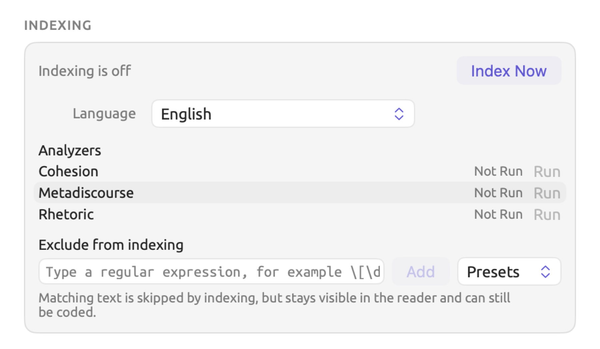
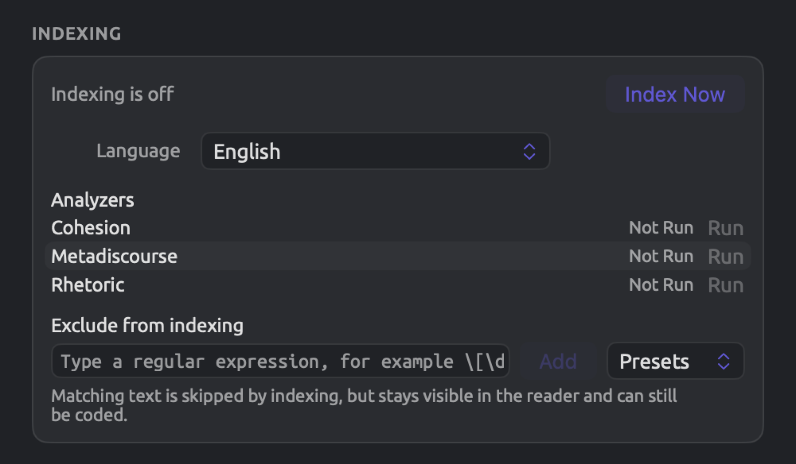
Afterwards, your document will enter the queue for processing. If Index Now is mistakenly clicked on, you may use Edit ▸ Undo Index Now (⌘Z) to revert it back to the previous status Indexing is off. If indexing has already finished by then, the document keeps its analysis.
Choosing analyzers for a document
All analyzers working on the language of a particular document will run on it during indexing. There is always an option to exclude an analyzer from processing on individual documents either while importing a document or at any time afterward via deleting the findings generated by the analyzer from Document Properties. It might be appropriate to exclude an analyzer from a document whenever said analyzer does not suit the content. Rhetoric, for instance, identifies devices like nominalization and periodic sentences; however, since these are characteristic of written prose, you might wish to exclude it from analyzing “Radio Debate”, a recording transcript. Whenever it is excluded from analyzing all transcripts, a project-wide query for Findings counts rhetorical devices in the written documents only.
Here is what happens when you choose to exclude an analyzer from processing on a document:
- All findings by the analyzer on this particular document will be removed;
- The lens for this analyzer will disappear from the document’s lens menu;
- In the Discourse facet of the Grammar tab, you’ll find indications like No Rhetorical Devices for the document;
- When applying an analyzer you created yourself to auto code documents, Auto Code… skips over any documents that the analyzer was excluded from previously.
Choosing analyzers at import
Analyzers are listed with checkboxes under Analyzers in the Indexing part of the import dialog. The built-in analyzers appear first, followed by yours alphabetically. When the value of Language is Automatic, all analyzers will appear on the list; otherwise, only those capable of processing documents in the chosen language will show. Initially, everything will be checked by default; uncheck those you do not wish to include for this document.
The analyzer list in Document Properties
For viewing or editing the analyzers associated with an existing document within your project, follow this procedure:
- Select the document in the sidebar and choose Project ▸ Properties, or right-click it and choose Properties.
- Scroll down to the Indexing part. Analyzers lists the analyzers that handle the document’s language. For a document in another language, it lists them all, with Run disabled.
Each row shows the state of the analyzer:
| State | Meaning |
|---|---|
| Done | The analyzer has run on the whole document with its current version. An analyzer that ran and found nothing is Done too. |
| Out of Date | The analyzer has run on part of the document, or with an earlier version. This is usually brief, because LemmaLoom brings it up to date by itself (see When analyzers are executed again below). |
| Not Run | The analyzer has not run on this document, because it was left out, because the document has not been indexed yet, or because the analyzer stopped with an error during indexing. |
| Running | The analyzer is running now. In a long document, a progress ring shows how far along it is. |
| Failed | The analyzer stopped with an error after you clicked Run. Hover the mouse pointer over Failed to read the error. |
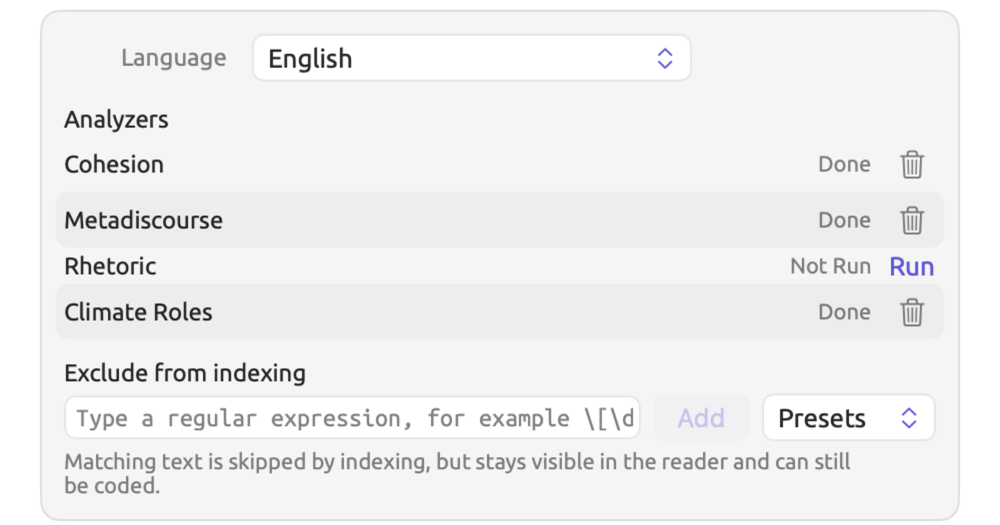
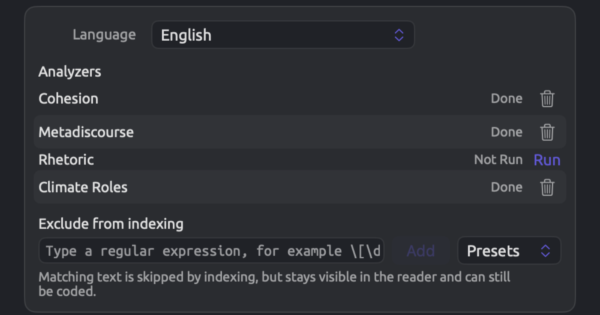
Clicking Run links or the trash button in this list will take effect immediately regardless of whether you click Cancel afterward.
Removing an analyzer’s output
If you remove an analyzer’s output, LemmaLoom removes the findings and leaves the analyzer out of the document from then on.
- Open Document Properties for the document and scroll to Indexing.
- In the analyzer’s row, click the trash button. Hovering the mouse pointer over it shows Remove Output. The button appears only for analyzers that are Done or Out of Date.
The row now changes to Not Run. When the document gets reindexed (perhaps due to editing), the analyzer remains removed. You may undo the removal with Edit ▸ Undo Remove Output (⌘Z) to restore and rerun the analyzer. Should you wish to run it again in the future, click Run on the same row.
Running an analyzer
- Open Document Properties for the document and scroll to Indexing.
- In the analyzer’s row, click Run. The link appears for analyzers that are not Done.
If your document lacked the analyzer, it is added back, and the analyzer runs immediately on the existing analysis. As it analyzes, its row displays as Running, with the sidebar badge and the reader’s status bar indicating such, as well as the Activity window, e.g., Running Rhetoric. Should the document originally lack the analyzer, choosing Edit ▸ Undo Run (⌘Z) leaves it out again and removes the results of the run.
Run remains disabled until indexing is complete, and for a document imported without indexing. Hovering your mouse pointer over it reveals Not indexed yet or Indexing is off accordingly.
Should one of your own analyzers display Not Run in a fully indexed document despite never being left out, chances are that the analyzer failed during indexing due to some error. Clicking Run lets you attempt running it again. An unsuccessful run causes the analyzer to be listed as Failed. Hovering your mouse pointer over Failed provides you with the error message associated with the failure. The error can then be tracked down via Window ▸ Analyzers (see Chapter 20, Custom Analyzers).
When analyzers are executed again
Run isn’t usually necessary because LemmaLoom re-runs the analyzers automatically. The two triggers for automatic re-running are when your document is indexed once again (see Indexing a document again) and when you remove/add any of your own analyzers through Window ▸ Analyzers, update its code or its languages, or modify its legend keys.
In the second case, LemmaLoom re-runs the analyzer across all projects, on every document in its languages, excluding any document whose previous results you deleted. Only the analyzers re-run, so this is much faster than full indexing. Meanwhile, since all affected documents count as Indexing during this time, their names gray out in the sidebar with a progress ring while the row of the analyzer in Document Properties may display Out of Date until completed.
When an analyzer’s row displays Out of Date under Window ▸ Analyzers, it signifies something else. This Out of Date label indicates the analyzer comes from a modified query. Save the analyzer again from the altered query (see Chapter 18, Using Query Results) to fix this issue.
What is available without the analysis
Many features of LemmaLoom rely solely on the text content and your annotations, so these features work in every document, indexed or not:
| Area | Works without the analysis |
|---|---|
| Reader | Reading, the search bar, selecting passages, editing the text, and playing recordings |
| Annotations | Coding, memos, links, and bookmarks; coded passages and bookmarks are shown in the text |
| Inspector | In the Coding tab, Codes, Codings, Links, Code Stats, and the Mosaic of Portrait; in the Text tab, Details (attributes and tags) and Bookmarks |
| Project and sets | Codebook, Codings, Memos, Links, Code Stats, Code Matrix, and Relations |
| Dictionaries | The counts in the Dictionaries section; Auto Code… with a dictionary lens, which also codes the documents of a set or project that are not yet indexed |
| Queries | The units Paragraphs, Text Matches, Codings, Memos, Bookmarks, Links, Speaker Turns, and Alignments, and the library units such as Documents and Codes |
| Other | Translating, sets and smart sets, attributes, tags, and exporting and exchanging projects |
These features require the analysis:
| Area | Needs the analysis |
|---|---|
| Reader | Clicking to select a word, sentence numbers in the gutter, counts in the status bar, and clicking a word in a transcript to move the player there |
| Lenses | The lens menu, for every lens; until indexing has finished, it is disabled, with the tooltip Lenses become available when indexing completes |
| Inspector | The statistics in the Text tab; the whole Grammar tab; Code Sketch and the Codeline of Portrait in the Coding tab; Sketch Space in the Multimode tab |
| Word sketches | Word sketches for a document, a set, or the project |
| Queries | The units Words, Pattern Matches, Sentences, Phrases, Noun Chunks, and Findings; Collocates and Keywords; the Per 10,000 Words measure, which takes its word counts from the analysis |
| Auto coding | Auto Code… with one of your own analyzers’ lenses, which skips documents not yet indexed |
| Smart sets | The Tokens and Sentences fields |
Whenever such a view encompasses multiple documents, it omits the documents that haven’t been indexed and informs you of how many it included. A query will similarly provide you a document count alongside your hit count in the results bar (see Documents left out in Chapter 16, Query Results and Statistics). 5 of 6 documents were searched, for instance, since one out of the six documents included in the “Activists” set is not indexed yet. A word sketch of a set or project will give you something like 13 of 14 documents indexed.
Documents will only be omitted when using a unit that requires the analysis (see the table above). If you use a unit that doesn’t require analysis, however, such as Paragraphs, all the documents will be included in your query. For documents not indexed, a text row whose first menu is set to Word, Word Form, or Lemma searches the text as Text does until indexing is done. Query from Selection makes a plain text search there (see Chapter 17, Query Patterns and Discovery).
Indexing a document again
The analysis of a document in LemmaLoom remains valid until something it depends on changes. These changes send it back to the queue:
| Change | What LemmaLoom does |
|---|---|
| You edit the text and click Save | Indexes the document again; in a long document, usually only the part you changed |
| Edit ▸ Undo Edit Text | The same, for the restored text |
| You change Language in Document Properties and save | Indexes the whole document in the new language |
| You change Exclude from indexing in Document Properties and save | Indexes the whole document again |
| Edit ▸ Undo Delete Document | Indexes the restored document, because its analysis was deleted with it |
| You add, change, or delete one of your own analyzers | Reruns only the analyzers, on every document in that analyzer’s languages |
| Edit ▸ Undo Remove Output | Reruns the analyzers of that document |
| A new version of LemmaLoom changes how documents are indexed | Indexes every document again, in the background, the first time you open the new version |
After an edit
Saving edits immediately updates the text shown in the reader with your changes, and Saving will appear over it until your new analysis is complete (see What saving does in Chapter 5, Reading and Editing). All of your codings, memos, links, and bookmarks travel with the text they are attached to before re-indexing starts.
How much needs re-indexing depends on the size of the document. A document that does not exceed around 80,000 words in English is indexed in full as one piece, while a larger document is split up into multiple pieces at paragraph breaks. Any edit triggers the re-indexing of the piece containing the edit, meaning that, for most articles and speeches, edits trigger the indexing of the whole document. However, if editing occurred in long books or reports, then the unedited pieces usually keep their analysis, so the new analysis is ready much sooner. Significant insertions or deletions could push a paragraph forward into the next piece, thus triggering re-indexing of the pieces after it.
Generally speaking, it is a better practice to fix mistakes or make larger revisions prior to indexing; for example, you should import a PDF without indexing it yet if you are going to revise a lengthy document extensively (see Importing without indexing earlier in this chapter).
Archives and exchange files
A LemmaLoom archive (.llz) contains the analyses performed on its documents. When importing documents from an archive, you can use these analyses at once. If the archive was made by a version of LemmaLoom that indexes documents differently, its documents are indexed again.
Imported documents keep the analyzer findings stored in the archive, too. Under Document Properties in any imported document, any of your analyzers that are not recognized by the archive’s own library appear as Not Run; Run starts analyzing these documents accordingly. Any analyzer that was not present in your own library and comes from the archive is added to your library. Documents previously residing in your library can be analyzed by it only when next indexed, or manually via clicking Run.
A REFI-QDA project (.qdpx) stores its text documents, and indexing takes place just like it would for new documents. Refer to Chapter 22, Exchanging and Exporting for additional information on these two file formats.